Karakter Referans Kartından Video Üretimine
Yapay zeka ile video üretirken karşılaştığın en büyük problemi — tutarlılığı — adım adım çözmek için pratik bir rehber. Karakter sayfasından starting ve ending frame mantığına, oradan da uçtan uca demoya kadar.
Tutarlılık problemi ve referans kartı mantığı
Terimler, onlar, bunlar; çok fazla kafa yormaya gerek yok.
Video üretirken en sık karşılaşacağın problemlerden birisi tutarlılık sağlamaktır.
Tutarlılık sağlamaktan kastım nedir?
Bir karakterin tutarlılığını sağlamak, yani her video karesinde görünen kişinin, nesnenin, ortamın, bir ürünün veya herhangi bir şeyin devamlılığını sağlamak, aynı şekilde görünmesini temin etmektir. Bu, video üretirken karşılaştığımız en büyük sıkıntılardan bir tanesidir.
Bunu sadece bir dizinin bölümleri gibi veya filmin farklı aşamaları olarak düşünme. Bu, tek bir video içinde de karşımıza çıkabilen bir şey.
O yüzden, her şeyden önce yapmamız gereken şey, videodaki tutarlılığı sağlayabilmek.
Peki çözüm yok mu?
Evet, her geçen gün teknoloji gelişiyor ve karakter tutarlılığı konusunda da kendini geliştiriyor; ama hâlâ mükemmel değil. O yüzden temelde yapabileceğimiz bir şey var: karakter referans kartı oluşturma. Karakter referans sayfası da diyebiliriz buna.
Bunu oluşturduğumuzda aslında yapay zekaya her seferinde şunu söylemiş oluyoruz:
"Bak, ben bu karakteri üretiyorum veya bu ortamı üretiyorum. Bu kişiyi olduğu gibi koru!"
Mükemmel bir sonuç veriyor mu? Hayır! Vermediği noktalar da oluyor. Ama mükemmele en yakın çıktıkları almamızı sağlayan önemli adımlardan ve işlerimizi kolaylaştıran şeylerden bir tanesi bu oluyor.
Sadece karakter değil — ürün, ortam, storyboard
Bunu sadece video üretimi olarak düşünme. Yarın öbür gün bir otomasyon sistemi kurduğunda, aynı karakterin, aynı kişinin veya aynı ürünün tutarlı videolarına ihtiyaç duyacaksın. Yine bu karakter referans kartını kullanabilirsin.
Bunu sadece karakter olarak düşünme. Bir ürün için de yapabilirsin. Veya bir ortam için de yapabilirsin.
Amacımız, yapay zekaya "ben bunlarla, bu elementlerle, bununla çalışıyorum" diye öğretebilmek.
Aynı mantığı, video üretimlerinde bir hikaye anlatacağında storyboard mantığı olarak da kullanabilirsin.
Size evin önünde bir kedi hayal etmenizi söylesem, hepiniz muhtemelen kendi evinizin önünde aklınıza gelen, sizin deneyimlerinizden kalan bir kediyi hayal edeceksiniz.
Bizler, insan olarak, zihnimizde kendi geçmiş deneyimlerimize ait anılardan ve kendi deneyimlediğimiz şeylerden yola çıkarak kendi gerçekliğimizde bir şeyleri hayal ederiz.
Yapay zekâ da aynı şekilde, diye düşünelim. O da olabilecek en olası şeyi hayal etmeye çalışır; yani kendi gerçekliğini üretir. Eğer biz ona kendi gerçekliğimizi, kendi deneyimimizi ve kendi isteğimizi net bir şekilde söylemezsek, o da kendi istediği gibi bize yanıt verecektir.
Yapay zekaya referans kartını verdiğimizde; bu karakterin önden, sağdan, soldan nasıl göründüğünü, nasıl güldüğünü, mimiklerini ve görünüşünü anlamış oluyor. Böylece kendisi bir şeyleri tamamlamak zorunda kalmıyor.
Kart nasıl üretilir? (temel yaklaşım)
Aslında istediğin gibi üretebilirsin. Bu konuda serbestsin. Benim deneyimlerimden yola çıkarak şöyle bir öneri verebilirim: en temelde karakterin önden, yandan ve arka görünüşü — bunları vermemiz gerekiyor.
Karakter referans kartlarını farklı kategoriler altında üretebilirsin ve projelerine uygun bir şekilde bunları ekleyebilirsin.
Örnek olarak, eğer bir animasyon, çizgi film tarzında videolar üreteceksen, karakterinin mimiklerinin canlı olması gerekir. Çünkü çizgi filmler, mimikler üzerine ve abartılı hareketler üzerine kurulu bir mantığa sahiptir.
Bu tarz bir şey yapacaksan, önerim, karakter referans kartına normal görünüşünün yanında, ayrı bir de duygusal ifadeleri ve yansıttığı hallerini eklemen: üzgünken, mutluyken, şok olmuşken; yani mimikleri…
Eğer karakterinin kişiliğinde, oluşturduğun persona'da belirgin değişiklikte özellikler varsa — örneğin bu karakter üzgünken farklı bir yürüme stiline veya postüre sahipse — tür içinde karakter referans kartı oluşturabilirsin.
Burada uzun uzun anlatmaya çalıştığım şeyin altında mantığında şu yatıyor:
Benim neye ihtiyacım var?
Ben ne üreteceğim?
Hangi tarzda bir şey üreteceğim?
Ona uygun yapay zekayı nasıl besleyebilirim?
Bunları düşünmek gerekiyor.
Her şeyi çözecek tek bir prompt yok. Önemli olan şey, ben istediğim şeyde neye ihtiyaç duyduğumdur. Buradaki mantığı bulmak, dinamiği görebilmek önemlidir.
Temel karakter referans kartı üretimi
Doğrudan aşağıda verdiğim taslağı kullanabilirsin veya buna benzer bir şey üretmek istersen, altındaki promptu doğrudan herhangi bir görsel oluşturucuda kullanabilirsin — ya da ihtiyacına göre özelleştirerek.
Temel boş taslak
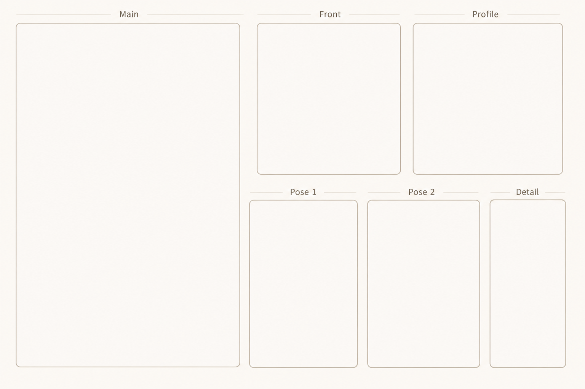
Bu taslağı üretmek için kullanılan prompt
İçini doldurmak — üç yol
Promptumuzu oluşturduk. Peki bundan sonra ne yapacağız? İçini doldurmak var. Bu noktada üç seçeneğin var:
- Kendi fotoğraflarını doğrudan Canva üzerinde buna ekleyebilirsin.
- Yapay zeka ile oluşturduğun bir karakterin, tutarlı bir şekilde farklı açılardan referans kartını oluşturmasını isteyebilirsin.
- Doğrudan şablonu verip yanına çektiğin kendi selfie'ni ekleyip bir referans kartı oluşturmasını isteyebilirsin.
Ben bu noktada üçüncü adımı seçiyorum ve hâlihazırda elimde olan bir görselimi kullanarak kendime referans kartı oluşturacağım.
ChatGPT ile adım adım
Herhangi bir görsel üretebileceğin araca gir. Ben örnek için ChatGPT'yi kullandım. Sen istersen Gemini, MidJourney veya farklı alternatifler kullanabilirsin.
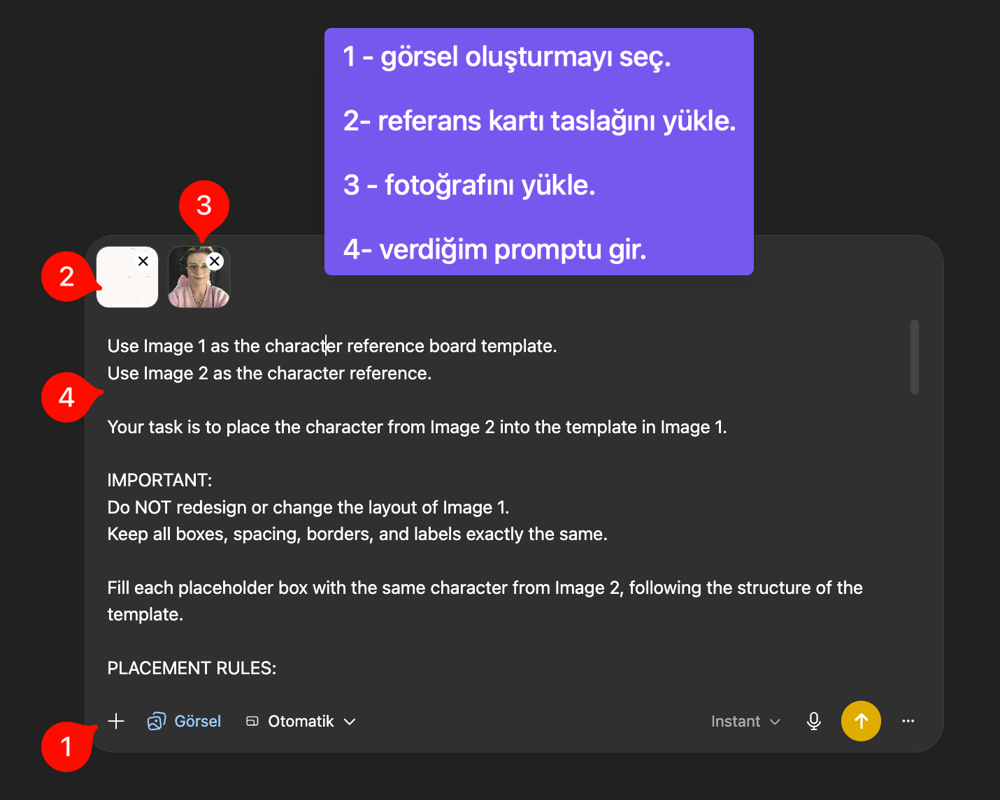
- Görsel oluşturma seçeneğini seç.
- Karakter referans kartı taslağımızı yükle.
- Hangi karakteri oluşturacaksan, o karakterin fotoğrafını yükle. Kendi fotoğrafını veya hangi karakterin referansını oluşturmak istiyorsan, onu.
- Verdiğim promptu gir ve kontrol ettikten sonra görsel oluştur.
Bu sıra önemli. Aksi halde yanlış sonuç alma ihtimalin yüksek.
İlk sonuç
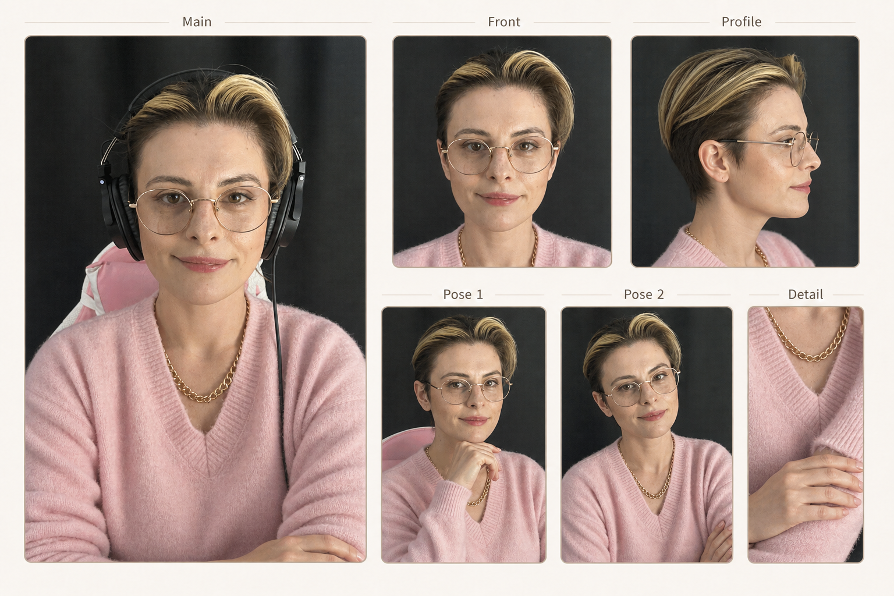
Aldığım sonuç bu şekilde oldu; hoşuma gitti. Kullanılabilir bir karakter referans kartı oldu. Yüz ifadesi, görünüş bakımından bana çok benziyor.
Fark ettiysen, saçlarımı burada kısa yapmış ve bence çok da güzel olmuş. Fakat benim saçlarım uzun. Peki niye böyle yaptı? Çünkü ona verdiğim veride saçlarım kısa görünüyordu. Yapay zekaya neyi verirsen, onu görür, onu anlar ve onu kabul edip ona göre üretimini yapar.
Ne görünmesini istiyorsan, bunu söylemen veya göstermen önemli. Promptumuzda yer vermemiz önemli.
Stil seçimi: gerçekçi mi, animasyon mu?
Bu noktada animasyon tarzına çevirmek isteyebilir, veya en başında her şeyi tek seferde verip halletmek isteyebilirsin. Bunu da yapabilirsin.
Yani: önce referans kartı taslağını yükleyip, ardından kendi fotoğrafını yükleyip, peşinden örnek olarak oluşturmasını isteyeceğin bir animasyon karakterini referans olarak verip bunu yapmasını da isteyebilirsin. Derste bunun örneğini yaptık.
Yapabiliyor — ama önerim: önce kendi fotoğrafını ve animasyon halini verip karakteri oluşturmak, ardından ikinci adımda referans kartını oluşturmak. Vaktin yoksa ilk seçeneği seç (hepsini bir arada üret); ama yaptığın şeye önem veriyorsan ve daha fazla uğraşmak istemiyorsan, ayrı ayrı adımlarla ilerle.
Çünkü ne kadar fazla şey yaptırmak istersen, yapay zekanın kafası da o kadar fazla karışacaktır.
Pixar dönüşümü örneği
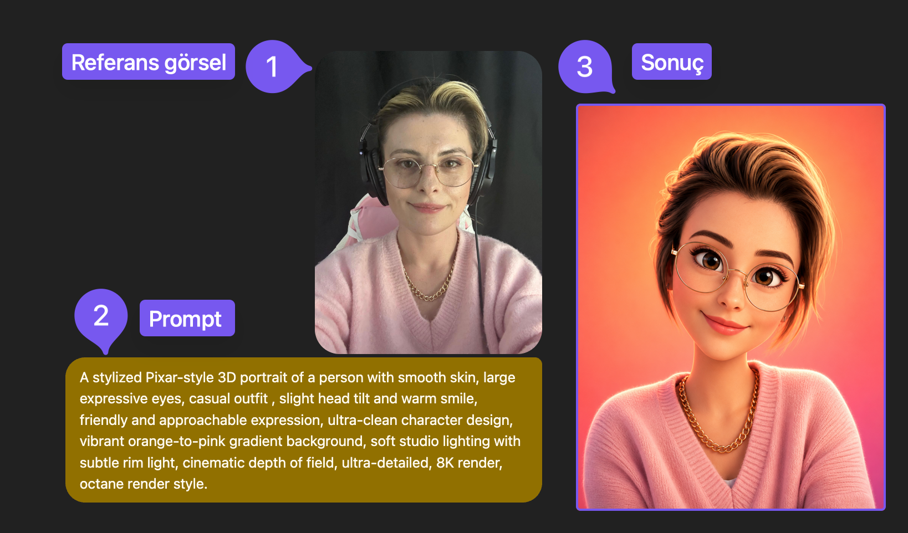
Pixar tarzı 3D portre promptu
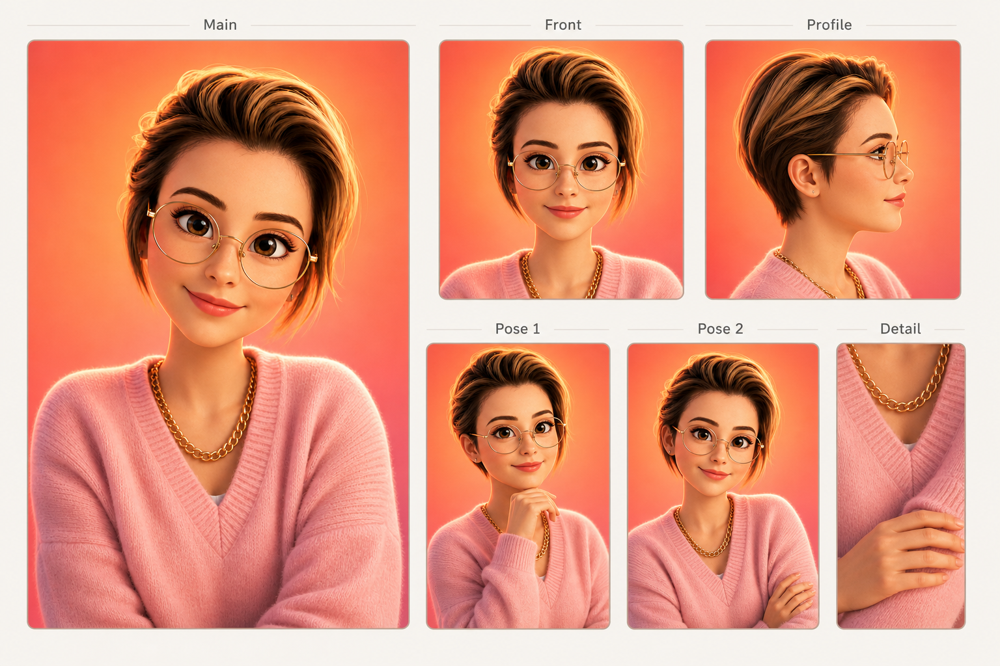
Evet, bu haliyle gayet güzel, kullanılabilir bir karakter referans kartı oluşturduk. Ama yeterli mi?
Belki temel şeyler için yeterli. Ama eğer bir çizgi film üretmek istiyorsan veya daha gerçekçi, daha hoş sonuçlar elde etmek istiyorsan, belli başlı şeyleri daha ekleyebilirsin.
Geliştirilmiş referans kartı (mimikler dahil)
Şimdi karakter referans kartımızı biraz daha geliştirelim. Ne ekleyebiliriz? Nelere ihtiyacımız var diye düşünelim.
Bu bölüm, daha detaylı bir karakter referans kartı oluşturmak isteyenleri ilgilendiriyor. Bu kadar detaylı yapmak zorunda değilsin; ama verdiğin detaylar ne kadar çok olursa, o kadar başarılı sonuçlar elde edersin.
Neden detay eklemeli?
Mantıken düşündüğümde, eğer ben video üreteceksem, sadece karakterin dışarıdan görünüşü, yüzü ve yüz hatları önemli değil. Bunun yanında karakterin vücudu, önden ve arkadan görünüşü de önemli. Ek olarak, çizgi film ürettiğim için mimikler de çok önemli. Duyguyu verebilmesi çok önemli.
O yüzden referans kartıma bu detayları da eklemek istiyorum ki, her seferinde nasıl bir gülüşe sahip olduğunu veya nasıl bir vücut hatlarına sahip olduğunu teker teker tanımlamak zorunda kalmayayım.
Geliştirilmiş boş taslak
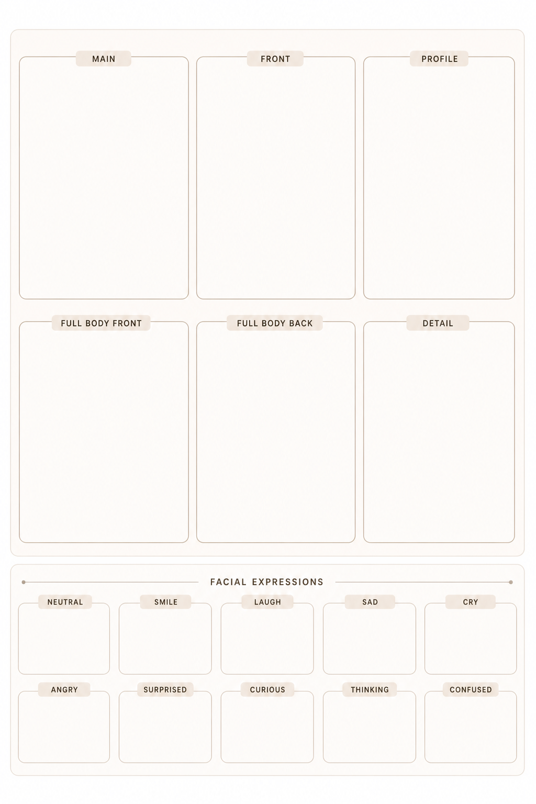
Geliştirilmiş taslak için prompt
Doğrudan verdiğim görseli kaydedip onu kullanabilirsin veya verdiğim promptu kullanarak sıfırdan kendine bir taslak üretebilirsin. Promptu incele; değiştirmek istediğin veya eklemek istediğin farklı detaylar olursa, ilgili yerlere yazarak bu prompta ekleyip yeni bir taslak oluşturabilirsin.
Tamamıyla iteratif yapma yöntemi — yani promptu geliştirme yöntemini burada kullanabilirsin. Benim de yaptığım şey buydu.
Geliştirilmiş kartın doldurulmuş hali
Yapacağım şey yine aynı:
- Görsel üretim aracına gitmek. Görsel üretme seçeneğini seçiyorum.
- Referans kartı taslağımı eklemek. Ardından, karakterimin görselini ekliyorum.
- Promptumu giriyorum ve referans kartını oluşturuyorum.
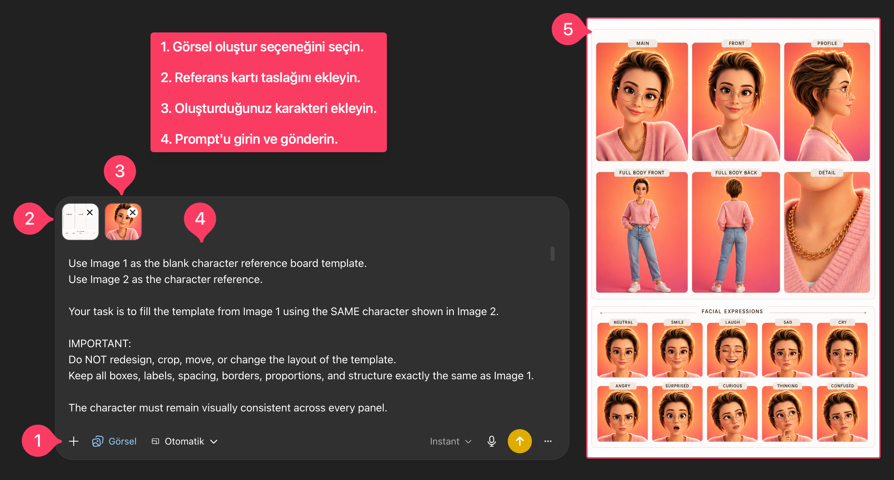
Tebrik ederim. Şu an elinde birçok videoyu başarılı ve tutarlı bir şekilde üretebilecek karakter referans kartın var. Buradan sonra istediğin kadar bu kartı geliştirebilirsin; ama yine de çok fazla bilgi kirliliği yapmamak adına, çok da show yapmayalım. Bu yeterli olacaktır. :)
Starting & Ending Frame mantığı
Şimdi gelelim, video oluşturmadan önce atacağımız gerçekten ilk somut düşünce adımına.
Doğrudan karakter referans kartını vererek ve aklındaki videoyu tamamıyla aktararak baştan sona bir video üretebilirsin. Bunda hiçbir sakınca yok. Hızlı bir şekilde aksiyon almak için bu yöntemi kullanabilirsin.
Fakat bu yazının başında da söylediğim gibi, video üretirken en sık karşılaşacağımız problem tutarlılıktır. Neyin tutarlılığının olduğunun bir önemi yok.
Yapay zeka boşlukları kendisi doldurur
Tamam, referans kartımız ile karakterin tutarlılığını sağlayabiliyoruz. Peki, videonun içindeki olası mekan tutarsızlıkları veya aklındakinin tam olarak gerçekleşmeme kısmı, yani videonun kontrolü ne kadar bizim elimizde olacak?
Yapay zekaya aklındaki bağlamı vermezsen, boşlukları kendisi doldurur.
Videonun tutarlı olmasını istiyorsan, hangi alanda olduğunun bir önemi yoktur. Yapay zekaya, fikir yürütebileceği ve boşlukları doldurabileceği alan bırakmamak gerekir.
Bunu yapmanın diğer yöntemlerinden biri, sahnenin nasıl başladığını ve nasıl bittiğini ona açık ve net bir şekilde söylemek veya göstermektir. Sadece söylemeyi veya sadece göstermeyi tercih edebilirsin; ancak en güzel versiyonu, bunu gösterirken söylemekten geçiyor.
Yani, prompt ile videoda ne olacağını anlatmadan önce, görselle göstermemiz lazım. Unutma — amacımız yapay zekanın "boşlukları" doldurmasına izin vermemek.
Sahne, Shot, Frame — kavramlar
Bu düşünceden bir sıyrılıyoruz şu anda. Bizim sahne dediğimiz şey, tüm video olmayacak. Yani, "10 saniye = bir sahne" gibi bir mantığımız bu noktada devre dışı.
Ama eğer üreteceğin 10 saniyelik videonun içinde çok büyük atlamalar, çok büyük olaylar olmuyorsa, başını ve sonunu vermek yeterli olacaktır. Aradaki kısmı zaten promptlarla yapay zekaya yaptırtabiliyoruz.
Öncelikli olarak bilmemiz gereken şey, video üretirken bir adet senaryoya ihtiyacımız var. Senaryo, video üretirken bizim en büyük şeyimiz. Yani: videonun tamamında ne oluyor — bu bizim ana hikayemiz.
Örneğin, bir kadın gece boyunca yapay zeka ile çalışıp kendi işini kuruyor. Bu senaryomuz.
Sahne dediğimiz şey ise bu senaryoyu oluşturan parçalarımız.
Kadın masada çalışıyor, kahve yapıyor, sunum hazırlıyor; sabah oluyor.
Bunların her biri bir sahne.
Shot dediğimiz kısım, sahnenin kamera açısından çekilmiş halidir. Örneğin, "kadın çalışıyor" sahnesinde:
Yakın plan, klavyeye yazan eller ve yandan kamera açısı.
Bunların her biri bir shot, yani çekim demektir.
Frame dediğimiz şey ise tek bir fotoğraftır. Video, aslında hızlı geçen fotoğraflardır. Bir frame örneği vereceksek: kadının o anki donmuş görüntüsü.
Yapay zekanın sınırları
Bu kadar uzun uzun anlattım. Niye anlattım? Çünkü yapay zekanın sınırlarını bir kez daha görmeni istedim.
Genelde şu hatayı yapıyoruz: yapay zekayı Pixar gibi veya herhangi bir büyük stüdyo gibi düşünüyoruz, ama değil. Stüdyolar, 3 boyutlu sahnelerle, animasyonlarla, fizik kurallarıyla, timeline ile keyframe'lerle çalışıyor; ancak yapay zeka ile video üretme modelleri bunlarla çalışmıyor.
Yapay zeka video modelleri, frame'ler arasında mantıklı görünen görüntüler üretmeye çalışıyor. Tam bir fiziksel mantığı yok; daha çok rüya görürmüş gibi çalışıyor da diyebilirim bu noktada.
Yönetmen sensin
Şimdi düşünce tarzımızı biraz daha değiştirelim ve en doğruya yakın düşünme tarzını şu şekilde tabir edebiliriz:
Yönetmen sensin. Yapay zeka da görüntü operatörü gibi çalışıyor. Sen sahneyi tanımlarsın, framingi verirsin, hareket sınırını koyarsın, karakteri kilitlersin. Yapay zeka da arada kalan kısmı akıtır, tamamlar.
Evet, birçoğumuzun hayalinde "tek bir prompt yazayım ve ortaya mükemmel sonuç çıksın" gibi bir düşünce var; ama profesyoneller bu işi böyle yapmıyor. Yani, uzun tek bir video üretmiyorlar. Bunun yerine, kısa çekimler ile kontrollü geçişlerle sahne bazlı üretimler yapıyorlar.
Mantık şu şekilde çalışıyor
- Çekim 1: Kadın laptop ile çalışıyor.
- Çekim 2: Yakın plan göz.
- Çekim 3: Kahve alıyor.
- Çekim 4: Pencereye bakıyor.
Bunların hepsini ayrı ayrı ürettiriyor. Ardından edit yaparak birleştiriyor.
Neden böyle yapıyor?
- Çünkü yapay zeka, 10 saniyelik kompleks bir üretim yerine 3 saniyelik kontrollü sahnelerde çok daha iyi sonuçlar veriyor.
- Çünkü hareket alanı sınırlı.
- Çünkü doldurması gereken alan daha az.
"Starting frame" ve "ending frame" yapay zekaya hikaye yazdırmaz. Yapay zekaya hareket sınırı verir. Ve ne kadar sınır verirsek, o kadar kaliteli, o kadar tutarlı, o kadar sinematik çıktı alırız.
Kısacası, video üretme işi bütünü tek seferde alma değil; bütünü görüp parçalara ayırıp teker teker çıktı alma işidir.
Video fikri büyük olabilir. Ama yapay zekâya vereceğimiz sahne küçük olmalı. Büyük fikri önce sahneye, sonra shot'a, sonra starting ve ending frame'e indiriyoruz.
Demo: Nef'in hikayesi (uçtan uca)
Hadi şimdi demomuzu yapalım.
Senaryo
Ürettiğim karaktere Nef adını verdim. Hayalimdeki sahnede Nef adlı arkadaşımız bir kafede oturuyor ve çalışıyor. Ama o kadar çok çalışmış ki, her yere tutulmuş ve bundan yakınıyor.
Evet, aklımdaki sahne bu ve bunun için de bir başlangıç sahnesi ile bitiş sahnesine ihtiyacım var.
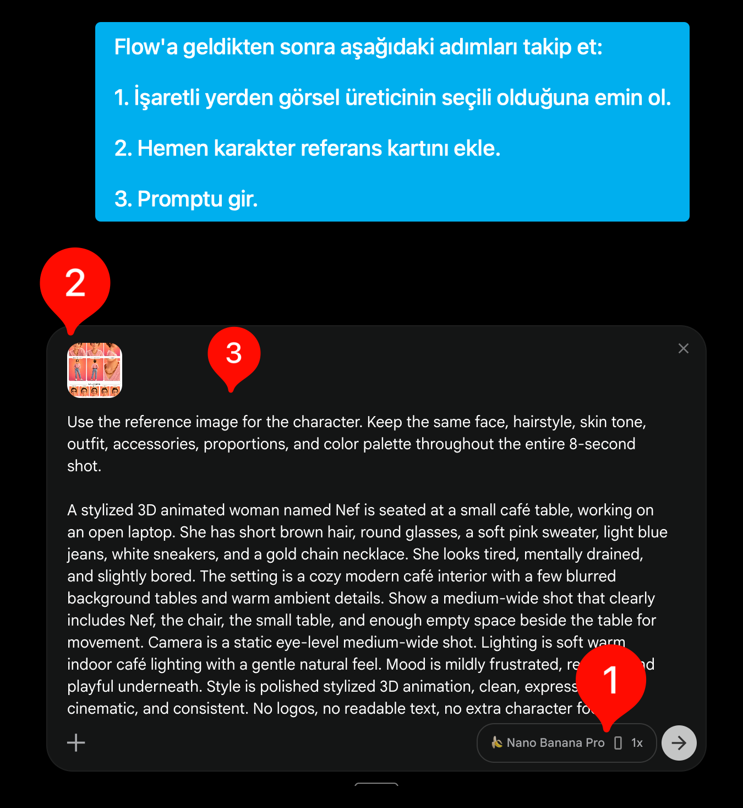
Hangi araçta üretelim?
Bu adımda ChatGPT'den veya Gemini'in içinden doğrudan Flow'a gittim. Bunu yapmamın en büyük sebebi, aynı yerin içinde videoyu da üretebiliyor olmamdan dolayı.
O yüzden eğer Google AI aboneliğin varsa, sen de doğrudan Flow'un içine gir ve tüm üretimlerini orada yap. Emin ol, daha kolay olacak.
Bu şekilde yapmak zorunda değilsin. Görselleri ayrı ayrı da üretebilirsin. Adımlar aynı: referans görseli ekle, prompt gir ve oluştur.
Ending Frame için "İsteme ekle" ipucu
Starting frame görselin oluştuktan sonra, mouse'unu oluşan görselin üstüne doğru getir. Sağ üst köşede kalp, ok ve üç noktanın olduğunu göreceksin. Üç nokta kısmına tıkla ve "İsteme ekle" seçeneğine tıkla.
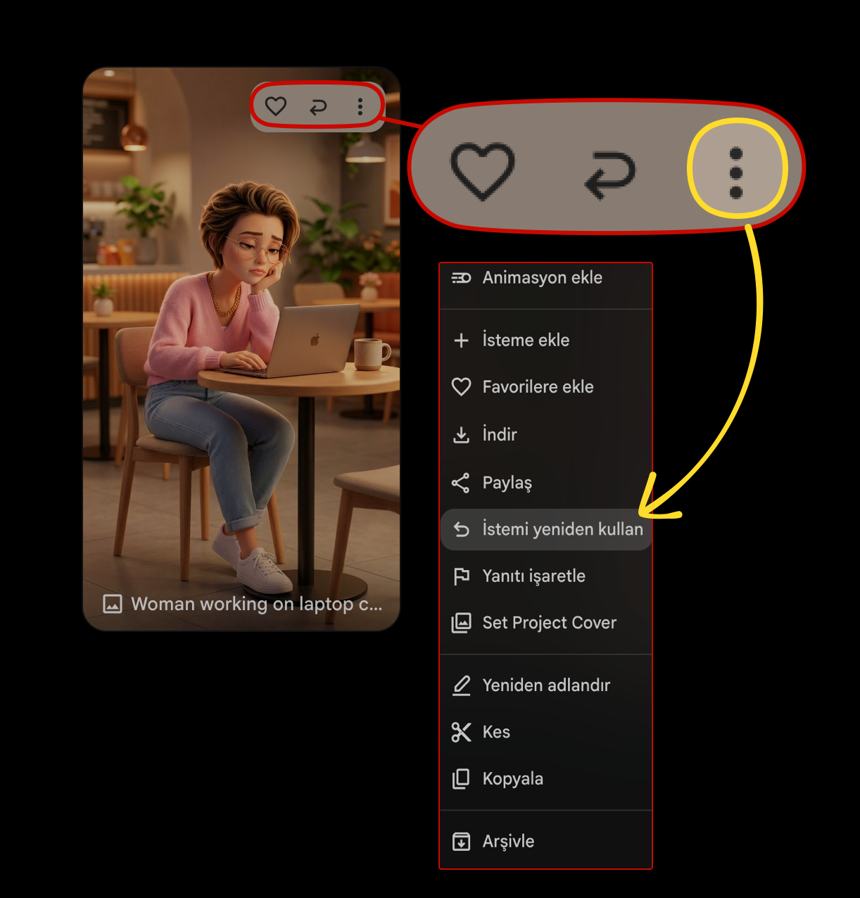
Bunu yaptığında şunu demiş oluyorsun: "Bir sonraki vereceğim promptta bu görseli kullan." Yani aslında, Ending Frame için karakteri ve mekanı tutarlı yapması, devamlılığın korunması için bu görseli promptumuzun içine eklemiş oluyoruz.
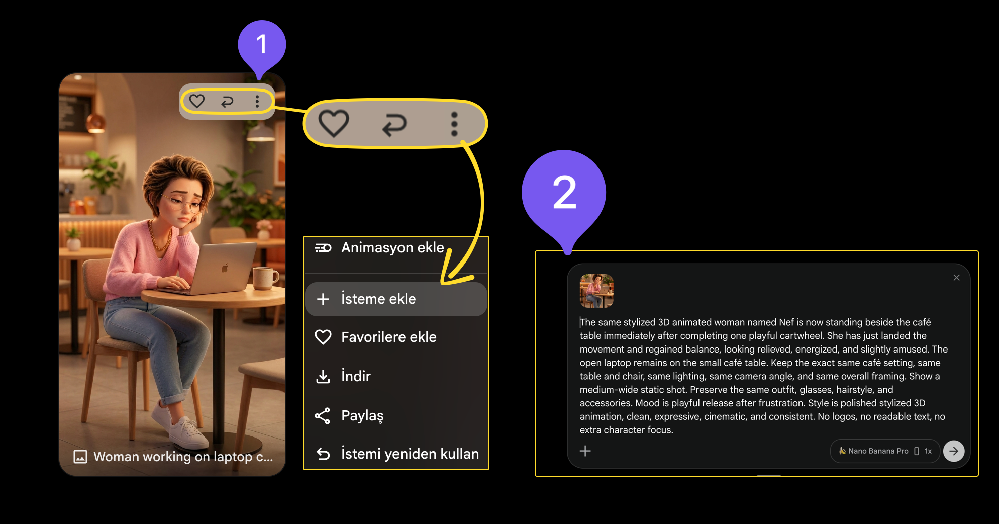
Ending Frame'i de ekledikten sonra, "görseli oluştur" diyoruz ve karşımıza Ending Frame'imiz çıkıyor.
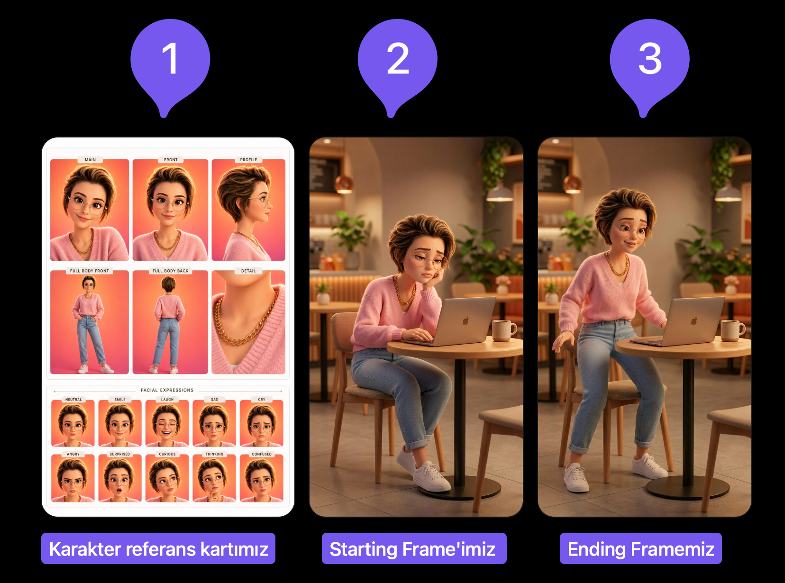
Video üretimine geçiş (Flow)
Bu noktadan sonra artık videoyu oluşturmaya geçebiliriz. İlk ve en önemli adımımız: aynı sayfada kalıyoruz ama üretim türümüzü değiştiriyoruz. Bunun için sayfanın altındaki gösterdiğim yere gel.
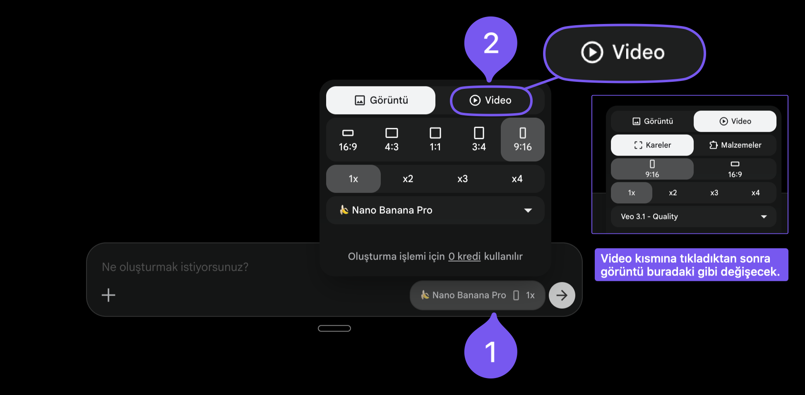
Gerekli ayarlamalarını yaptıktan sonra, sana gösterdiğim gibi bir arayüz göreceksin. Burada "başlat" olan yere tıkladığında, görsel seçmeni isteyecek. En son oluşturduğun görsellerden "starting frame" için oluşturduğun görseli "başlat" kısmı için seç. "Bitiş" bölümünde ise "ending frame" olarak ürettiğin görseli seç. Ardından prompt yazma yerine gel.
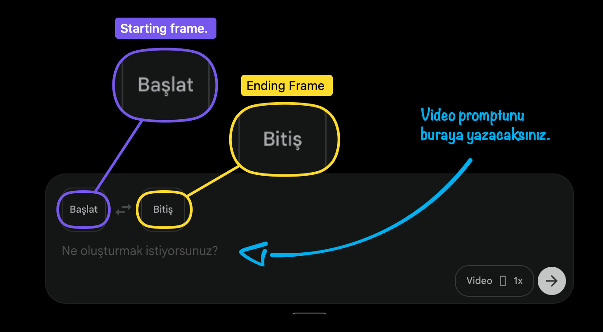
Frame'ler ve sonuç
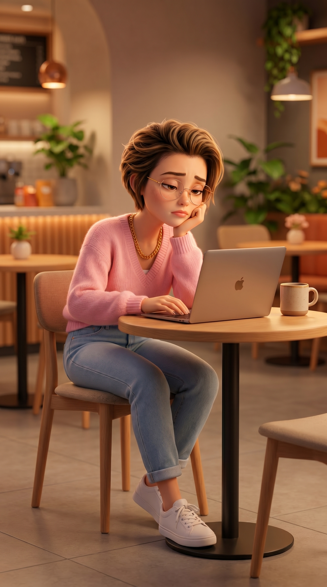
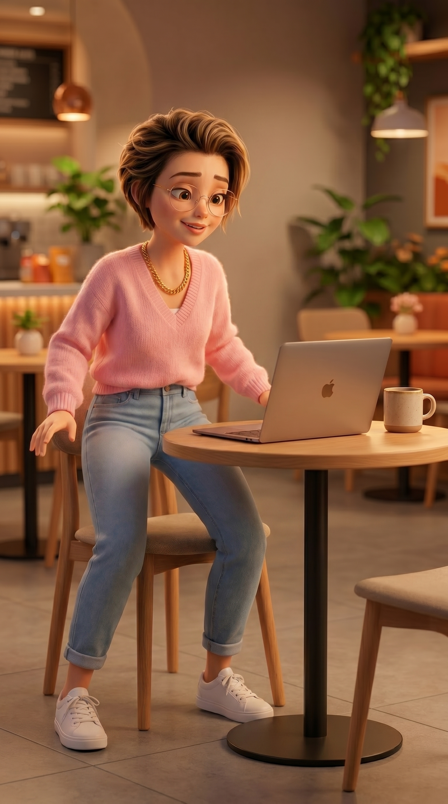
Birincisi starting frame'im; ikincisi ise ending frame'im.
Daha kolay yol — Custom GPT
Karakter referans kartını oluşturdun. Aklında bir karakter var. Oluşturduğun karakterin personası belli; nasıl maceralar yaşayacağı belli. Ama bunları nasıl promptlaştıracağını, nasıl ending frame, starting frame ve video promptunu oluşturacağını bilmiyorsan — senin için bir custom GPT oluşturdum.
İlk derslerde de prompt düzenleyici oluşturmuştum, hatırlarsan, onun bir benzeri. Şimdi, aklındakileri nasıl promptlaştıracağın konusunda emin değilsen, aşağıda verdiğim linke tıklayıp ChatGPT'ne oluşturduğum bu GPT'yi ekliyorsun. Oradan aklındaki sahneyi yazıyorsun. Zaten custom GPT seni yönlendiriyor olacak.
Sevgiler, umarım yararlı bir rehber olmuştur. ✦